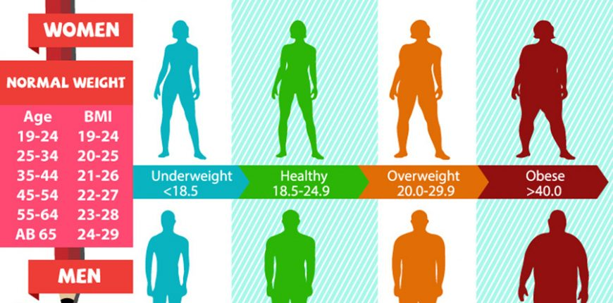

<ion-header>
  <ion-navbar>
    <ion-title>หาค่าดัชนีมวลกาย</ion-title>
  </ion-navbar>
</ion-header>


<ion-content padding>
 
  
    <div class="row">
      <ion-slides pager>
          
            <ion-slide style="">
              
            </ion-slide>
            
            <ion-slide style="">
              
            </ion-slide>
      </ion-slides>  
    </div>

    <ion-item>
        <ion-label color="dark" stacked><h2>ส่วนสูง</h2></ion-label>
        <ion-input  [(ngModel)]="Height"  type="text" placeholder="ส่วนสูง/Cm"></ion-input>
      </ion-item>
    
      <ion-item>
        <ion-label color="dark" stacked><h2>น้ำหนัก</h2></ion-label>
        <ion-input [(ngModel)]="Weight" type="text" placeholder="น้ำหนัก/Kg"></ion-input>
      </ion-item>

<br>
<br>

<div padding>
<button (click)="gotToResult()" ion-button color="danger" block>คำนวณ</button>
</div>


    <h3>BMI  ของคุณคือ {{ bmi | number:'2.2-3' }}</h3>
    <p>{{ bmidetail }}</p>

</ion-content>
